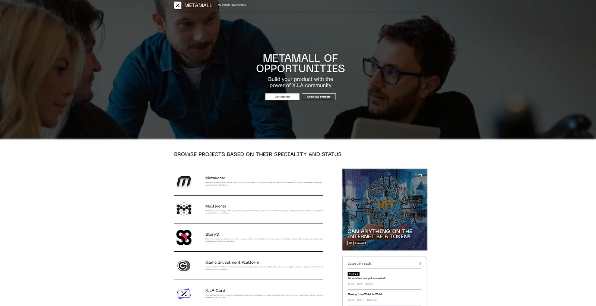

From building tools to a marketplace
- daily active sellers
- ≈1 000
- ways to monetise an asset through sales and rentals
- 2
- public MetaMall announcement
- 07.2022
X.LA introduced MetaMall as a set of tools for creators to build virtual property and offer it for sale or rent. I led the marketplace launch as a product manager in Xsolla R&D.
Seller activity is from the résumé. Product capabilities are from the X.LA announcement of 21 July 2022.
Tools for sellers
In July 2022, X.LA introduced MetaMall as a platform for creators of virtual spaces. Creators could build, rent out and sell virtual property.


Launching the marketplace
I led marketing in R&D and took on the product manager role for MetaMall. My remit covered bringing the platform to launch.
What sellers could do
Sellers had two commercial options for a virtual asset: a one-off sale or a rental. The options gave them a choice between transferring the asset and granting temporary access. Daily active sellers capture the scale of the supply side after launch.
Product analysis
From active seller to first transaction
What to track after publishing
About a thousand daily active sellers describes the scale of the marketplace. To understand its value to sellers, I’d measure the share of first-time publishers who complete a paid transaction within 30 days. I’d read time to first transaction alongside that share so quick sales for a small subset don’t hide the sellers still waiting.
What to change when the funnel stalls
If creators stop between building and publishing, I’d look at the editor and listing setup. If listings are published but few shoppers open them, I’d prioritise discovery. If shoppers view listings but rarely transact, I’d examine pricing and terms separately for rentals and sales.